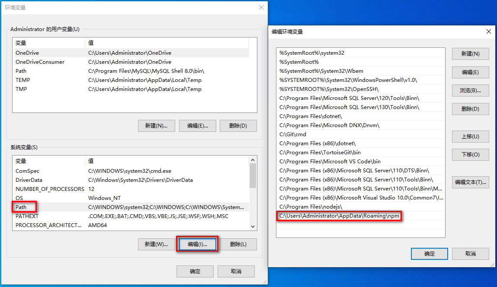

个人博客搭建
本文最后更新于：2023年7月9日 早上
个人博客搭建
问题
cnpm command not found
问题出现：安装cnpm出错
1
> $ npm install -g cnpm --registry=https://registry.npm.taobao.org按照淘宝 NPM 镜像安装，
cnpm -v命令不好使,出现如下：
找到cnpm本地路径
1
cnpm`命令的一般地址为：`C:\Users\Administrator\AppData\Roaming\npm
cd到这个路径下，执行cnpm -v命令会出现如下，说明cnpm命令是可用的，需要配置系统环境。
注意：git的bash和power shell执行
cnpm -v是不可用,一定是cmd，配置环境变量
将这个路径加到
Path变量下，确定后在git的bash还是cmd，powershell 都可以使用cnpm命令了。
hexo command not found
解决方法同 cnpm command not found，在电脑上找到 hexo.cmd 的路径，然后添加到path变量里面
修改 npm 下载&安装路径
一般情况下，我们安装 Node.js环境，程序会自动把 NPM全局模块的路径设置在系统盘（通常是在 c盘下），我们在项目开发阶段不建议全局路径设置在系统盘，不但会影响到电脑的性能，而且还很不安全。可以通过以下命令来设置下载的全局路径目录:
输入命令，查看当前配置：1
npm config ls运行结果：

如果是第一次使用NPM安装包的话，在配置中只会看到prefix的选项，就是NPM默认的全局安装目录。但是如果有多次使用NPM安装包的话，就会看到cache和prefix两个路径，如下图
第一步：新建两个文件夹
在欲更改的目录下新建两个文件夹，分别是：node_global 和node_cache，效果如图：

第二步：执行下面两条命令
打开命令提示符，执行下面两条命令：
1
2npm config set prefix "E:\nodejs\node_global"
npm config set cache "E:\nodejs\node_cache"执行成功后，可以使用npm config ls命令查看配置的结果，效果如图：

第三步：配置环境变量
验证配置成功后，需要配置环境变量。在环境变量中，新建一个系统变量，变量名NODE_HOME,变量值：E:\nodejs，效果如图：

在path变量名中，新建变量值：
1
2
3%NODE_HOME%
%NODE_HOME%\node_modules
%NODE_HOME%\node_global\效果如图：

第四步：安装CNPM
安装CNPM:
1
npm install -g cnpm --registry=http://registry.npm.taobao.org安装好后效果如图:

node_global文件中会出现

表示cnpm下载路径成功。
第五步：设置npm源（选做）
设置npm源，把默认源设置为淘宝镜像：
打开命令指示符，输入：
1
npm config set registry https://registry.npm.taobao.org设置完成后，输入npm config ls检查，出现下图表示修改成功。